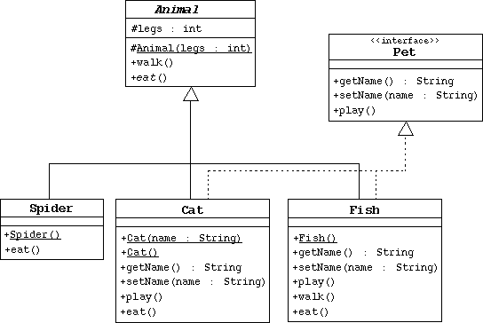

SL275: Module7: Advanced Class Features
Exercise #2: Use Interfaces and Abstract Classes
(Level 2)
Objective
In this exercise you will create a hierarchy of animals that is rooted in
an abstract class Animal. Several of the animal classes will
implement an interface called Pet. You will experiment with
variations of these animals, their methods, and polymorphism.
Directions

- Create the Animal class, which is the abstract superclass of
all animals.
- Declare a protected integer attribute called legs, which
records the number of legs for this animal.
- Define a protected constructor that initializes the legs attribute.
- Declare an abstract method eat.
- Declare a concrete method walk that prints out something
about how the animals walks (include the number of legs).
- Create the Spider class.
- The Spider class extends the Animal class.
- Define a default constructor that calls the superclass constructor
to specify that all spiders have eight legs.
- Implement the eat method.
- Create the Pet interface specified by the UML diagram.
- Create the Cat class that extends Animal and
implements Pet.
- This class must include a String
attribute to store the name of the pet.
- Define a constructor that takes one String parameter
that specifies the cat's name. This constructor must also call
the superclass constructor to specify that all cats have four legs.
- Define another constructor that takes no parameters. Have this
constructor call the previous constructor (using the this
keyword) and pass an empty string as the argument.
- Implement the Pet interface methods.
- Implement the eat method.
- Create the Fish class. Override the Animal methods
to specify that fish can't walk and don't have legs.
- Create an TestAnimals program. Have the main method
create and manipulate instances of the classes you created above.
Start with:
Fish d = new Fish();
Cat c = new Cat("Fluffy");
Animal a = new Fish();
Animal e = new Spider();
Pet p = new Cat();
Experiment by: a) calling the methods in each object, b) casting objects,
c) using polymorphism, and d) using super to call super
class methods.